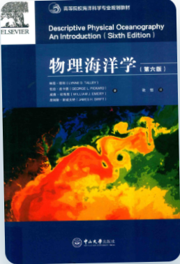
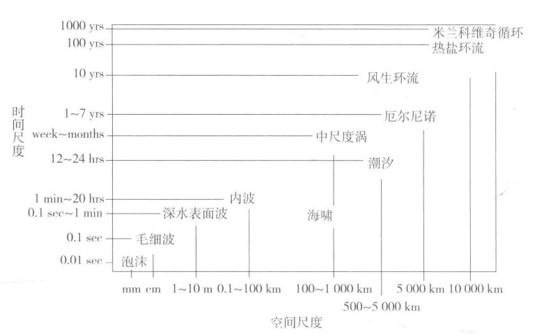
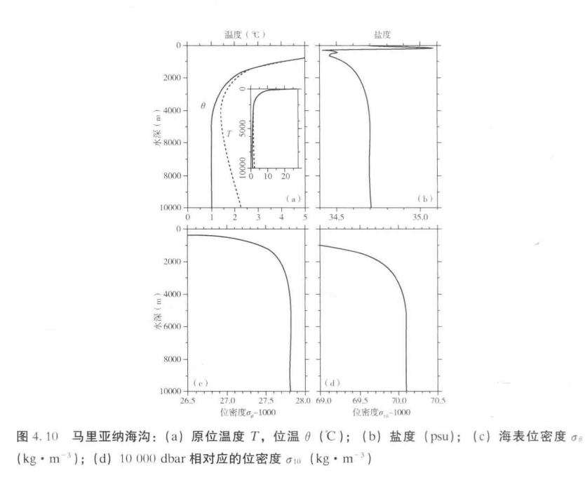
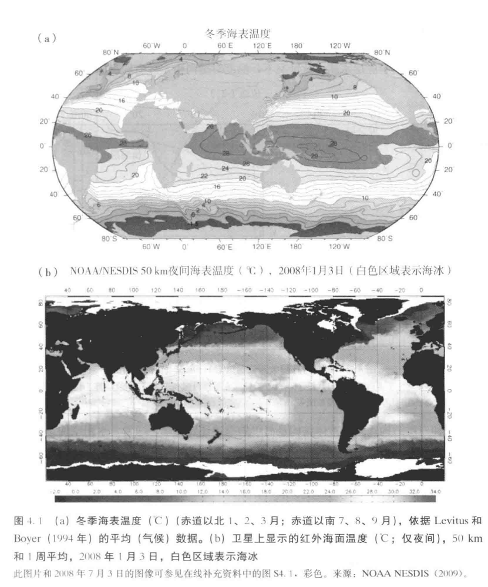
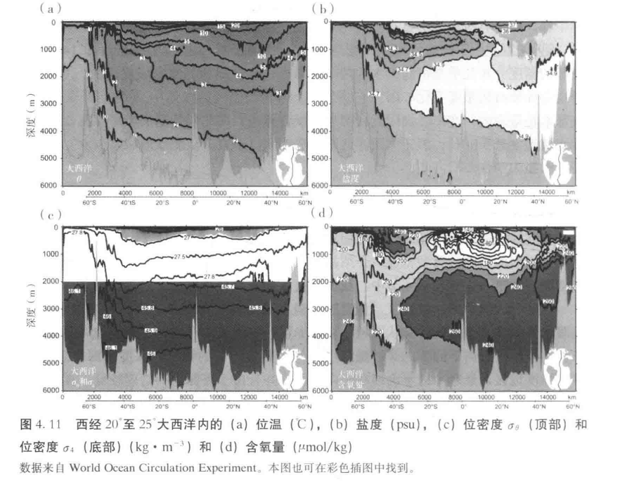
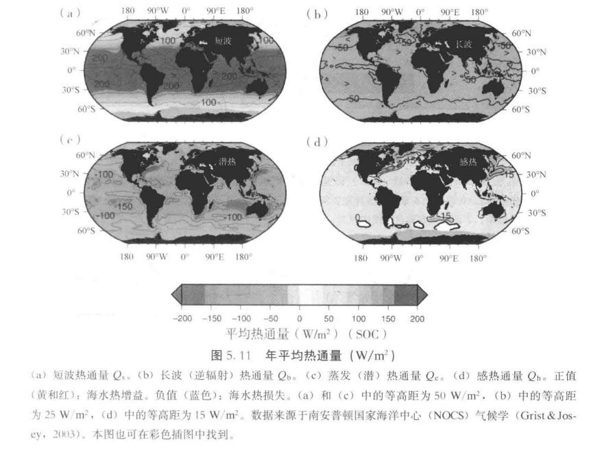
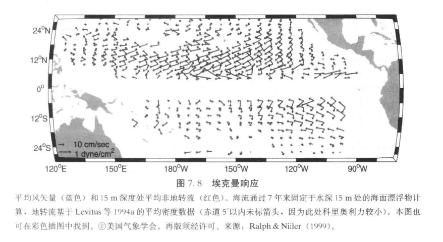

Hi, I'm YHY 🌊
Physical Oceanography · Ocean Data Analysis · Scientific Programming
欢迎来到我的个人知识库。我关注物理海洋学方向，兴趣集中在海洋环流、温盐结构、 海气相互作用以及河口动力学。这里记录了我对《物理海洋学》课程的深度研读、课堂反思以及独立设计的科研项目。
🛠 Skills & Tools
Python
NumPy
Pandas
Matplotlib
Xarray
NetCDF
Argopy
EOF / PCA
Statistics
MATLAB (Basic)
Git & GitHub
HTML / CSS
Markdown
📚 教材精读笔记 (Textbook Notes)
基于《物理海洋学（第六版）》（Talley 等编著）的详细研读，涵盖 1-8 章的核心理论与重点图表。

《物理海洋学》（第六版）
Descriptive Physical Oceanography: An Introduction (Sixth Edition)
物理海洋学专业的经典基础教材，全面涵盖海洋的物理属性、动力学过程以及海气相互作用。
📥 获取原版 PDF第1章：物理海洋学概论 (Introduction)
📖 核心概念
- 探究逻辑：现象是什么（What）？为什么会发生（Why）？如何观测和量化（How）？
- 时空尺度：从毫米级的湍流斑块，到千公里级的中尺度涡，再到万公里级的热盐环流。大洋环流受到地球自转的巨大影响。

图 1.2：物理海洋学现象的时空尺度（PPT/教材原图）
✍️ 我的理解
我原以为：物理海洋学就是纯研究海流方向。
后来发现：它是一门“观测驱动”的学科。先通过观测描述现象，再推导动力学机制。不仅是水，还包括温度、盐度、海冰等所有物理状态的时空演变。
后来发现：它是一门“观测驱动”的学科。先通过观测描述现象，再推导动力学机制。不仅是水，还包括温度、盐度、海冰等所有物理状态的时空演变。
第2章：海洋维度、形状和底质 (Ocean Dimensions)
📖 核心概念
- 尺度对比：地球71%被海洋覆盖。海洋平均深度约 3734m，而陆地平均海拔仅 743m。最深处马里亚纳海沟约 11,000m。
- 海底扩张：海底地壳非常年轻（<2.8亿年）。洋中脊（如东太平洋海隆、大西洋中脊）是地壳新生处，海沟是俯冲消亡处。
- 地形对环流的影响：海底山脊和海峡（如德雷克海峡）是深层水流交换的物理屏障或通道。
✍️ 我的理解
我原以为：海底就像平坦的沙漠。
后来发现：海底地形极其崎岖。快速扩张的洋中脊较平滑，而慢速扩张的大西洋中脊中央有巨大的裂谷。深海丘陵和海底山会影响深层海流的混合。
后来发现：海底地形极其崎岖。快速扩张的洋中脊较平滑，而慢速扩张的大西洋中脊中央有巨大的裂谷。深海丘陵和海底山会影响深层海流的混合。
第3章：海水的物理性质 (Physical Properties of Seawater)
📖 核心概念
- 现场温度 (T) 与 位温 (θ)：深海海水受压绝热升温。位温是将水团绝热提升到海面时的温度。比较不同深度的水团必须用位温。
- 盐度：从千分比演变到实用盐度（psu），现代海洋学使用绝对盐度（Absolute Salinity），基于电导率测量，无量纲。
- 密度与层结：冷水、咸水、高压水密度更大。海洋内部由密度跃层维持垂直稳定层结。
- 混合增密 (Cabbeling)：两股温盐不同但密度相同的水团混合后，由于状态方程的非线性，混合水密度变大而下沉。

图 4.10：马里亚纳海沟的原位温度(T)与位温(θ)对比，4000m以下差异明显
✍️ 我的理解
我原以为：温度计测出来的就是绝对真实的温度。
后来发现：深海巨大的压力会导致绝热压缩。如果不换算成位温，不同深度的水团根本无法对比。
后来发现：深海巨大的压力会导致绝热压缩。如果不换算成位温，不同深度的水团根本无法对比。
第4章：水体特征的典型分布 (Typical Distributions)
📖 核心概念
- 温度分布：表层随纬度递减。垂向典型分三层：混合层、温跃层、深层。
- 盐度分布：表层副热带最高（蒸发大），赤道和高纬较低。垂向存在盐度极值层。
- T-S 图：识别水团的“指纹”。不同水团形成于特定海区。两水团混合在 T-S 图上呈直线。
- 主要水团：AABW（南极底层水）、NADW（北大西洋深层水）。

图 4.1：冬季海表温度分布

图 4.11：大西洋位温/盐度垂直截面
✍️ 我的理解
我原以为：T-S 图就是一张普通的散点图。
后来发现：它是物理海洋学里的“DNA鉴定”。通过 T-S 图，我们可以反推水团来自哪里，经过了多少混合。
后来发现：它是物理海洋学里的“DNA鉴定”。通过 T-S 图，我们可以反推水团来自哪里，经过了多少混合。
第5章：质量、盐、热量收支和风的作用 (Heat Budgets)
📖 核心概念
- 四种热通量：
1. Qs（短波辐射）：得热，受太阳高度角和云量主导。
2. Qb（长波辐射）：失热，由海温和大气逆辐射决定。
3. Qe（潜热通量）：最主要失热项，受风速和海气比湿差控制。
4. Qh（感热通量）：由海气温差引起的传导，量级最小。 - 盐度与水平衡：E-P（蒸发减降水）决定表层盐度。
- 埃克曼动力学：风应力驱动表层水，受科氏力影响，北半球表层流向偏右 45°。

图 5.11：全球年平均热通量分布 (短波、长波、潜热、感热)
✍️ 我的理解
我原以为：热通量都是海洋向大气散热。
后来发现：Qs 是太阳给海洋加热。赤道获得的净热量必须通过大洋环流向高纬度输送，否则赤道早就沸腾了。
后来发现：Qs 是太阳给海洋加热。赤道获得的净热量必须通过大洋环流向高纬度输送，否则赤道早就沸腾了。
第6章：数据分析概念和观测方法 (Data Analysis)
📖 核心概念
- 时间序列分析：将复杂信号分解为不同频率的正弦波，识别周期。
- 客观分析：将不规则观测映射到规则网格上的数学方法。
- EOF：将时空数据分解为空间模态（EOFs）和时间序列（PCs），提取方差最大的方向。
第7章：海洋环流的动力过程 (Dynamical Processes)
📖 核心概念
- 地转平衡：科氏力与压强梯度力平衡。北半球，地转流沿等压线流动，高压在流向右侧。
- 热成风关系：地转流的垂直切变由密度的水平梯度决定。
- Sverdrup 平衡：埃克曼抽吸驱动了大洋内部的南北向输送。
- 西向强化：必须在西侧形成窄而强的西边界流（如黑潮、湾流）。

图 7.8：埃克曼响应（风应力与表层非地转海流）
第8章：重力波、潮汐与海岸海洋学 (Waves & Tides)
📖 核心概念
- 表面重力波与内波：内波发生在密度跃层，振幅大、波速慢，是海洋内部混合的主要来源。
- 潮汐：受地形和科氏力影响，形成复杂的动力潮。
- 沿岸过程：风引起的离岸埃克曼输送导致沿岸上升流。
📘 课堂笔记与出门票 (Course Notes & Tickets)
按课次整理的课堂重点，以及我自己的思考与出门票证据。
第1讲：导论与核心逻辑
🎫 出门票
这节课我最大的收获是理清了物理海洋学的“What - Why - How”研究框架。为了总览全貌，我课后使用 XMind 整理了一张知识地图。
第2讲：海洋维度与底质
🎫 出门票
我理解了海底地壳“年轻”的原因（洋中脊新生，海沟消亡）。我有一个疑问：既然地壳在俯冲带消亡，那物质最终去了哪里？查阅资料后得知，它们重新回到了地幔中，参与了漫长的地质循环。
第3讲：海水的物理性质与混合
🎫 出门票
这节课我搞懂了“位温”和“混合增密”。课上老师展示了如何用代码处理位温分布并计算混合增密，我把当时的 PPT 截图保存了下来。明白了当两股温盐不同但密度相同的水团混合时，混合后密度反而变大并下沉。
第4讲：水团特征的典型分布
🎫 出门票
1. 混合层与深层：混合层通常在 50-200m，深水区特征有所不同。
2. 副热带 vs 副极地：副热带存在永久性温跃层（200-1000m）和盐度最大值；副极地存在温度最小值。
3. 表层盐度最大区域：副热带海域（蒸发大于降水）。
2. 副热带 vs 副极地：副热带存在永久性温跃层（200-1000m）和盐度最大值；副极地存在温度最小值。
3. 表层盐度最大区域：副热带海域（蒸发大于降水）。
第5讲：热量收支与风的作用
🎫 出门票
4. 四类热通量：Qs是主要得热项；Qe是主要失热项。
5. 北大西洋比北太平洋咸：北大西洋副热带蒸发远大于降水，且受地中海高盐溢流水影响。
6. 季节差异：温带海域最大，热带和极地最小。
5. 北大西洋比北太平洋咸：北大西洋副热带蒸发远大于降水，且受地中海高盐溢流水影响。
6. 季节差异：温带海域最大，热带和极地最小。
第6讲：数据分析与 EOF
🎫 出门票
7. 温跃层是如何维持的？ 依赖向下热量扩散与深层冷水平流的动态平衡。
随堂测验题（EOF的目的）：正确答案是 B. 识别数据集中的主导空间模态及其时间演变。
随堂测验题（EOF的目的）：正确答案是 B. 识别数据集中的主导空间模态及其时间演变。
第7讲：海洋环流动力学
🎫 出门票
Sverdrup 平衡与全球环流：
风产生埃克曼输送与辐合，导致水柱被压缩或拉伸。Squashing 向赤道移动，Stretching 向极地移动。 结合全球地转流场图，能直观看到西边界流（湾流、黑潮）和南极绕极流（ACC）的位置。

风产生埃克曼输送与辐合，导致水柱被压缩或拉伸。Squashing 向赤道移动，Stretching 向极地移动。 结合全球地转流场图，能直观看到西边界流（湾流、黑潮）和南极绕极流（ACC）的位置。
第8讲：重力波、潮汐与波动现象
🎫 出门票
这节课彻底理清了不同波动的生成机制。不同尺度的波动恢复力完全不同：毛细波靠表面张力，普通的表面重力波靠重力，而大洋里的罗斯贝波则是靠科氏参数随纬度的变化（β效应）！
我把课堂上讲到的 23 种海洋与大气波动整理成了一张详细的对照表。
我把课堂上讲到的 23 种海洋与大气波动整理成了一张详细的对照表。
总结：物理海洋学的前沿与展望
🎫 出门票
回顾整个课程，从经典的温盐分布，到复杂的动力学方程，最终走向了全球气候系统与数字孪生。我对 “海洋动力过程对碳-氮-氧生物地球化学循环的调控” 最感兴趣，这正好与我设计的“长江口藻华实验方案”不谋而合！
🎬 故事会 (Story Time)
这里记录了我从现象出发，动手探索海洋物理机制的“探案过程”。
故事1：追踪长江口的“幽灵碳”——一场关于藻华与碳汇的探案
🎬 开头：现象与悬疑
在学习完“海气相互作用”和“水团分布”后，我盯着长江口的卫星图陷入了沉思。
每年春夏，长江口冲淡水带来丰富的营养盐，引发壮观的藻华。浮游植物疯狂光合作用，吸收了大量的碳（净群落生产力 NCP）。我原以为，这些碳死后会像雪花一样沉入海底，形成长期碳汇。
但事实真的如此吗？这些新增的碳，究竟是变成了二氧化碳重新逃逸回大气（海气通量），还是真的沉到了混合层以下（POC输出）？在风暴频发、水流湍急的河口，这些“幽灵碳”的去向成了一个谜。
每年春夏，长江口冲淡水带来丰富的营养盐，引发壮观的藻华。浮游植物疯狂光合作用，吸收了大量的碳（净群落生产力 NCP）。我原以为，这些碳死后会像雪花一样沉入海底，形成长期碳汇。
但事实真的如此吗？这些新增的碳，究竟是变成了二氧化碳重新逃逸回大气（海气通量），还是真的沉到了混合层以下（POC输出）？在风暴频发、水流湍急的河口，这些“幽灵碳”的去向成了一个谜。
🔍 中间：抽丝剥茧的探案过程
为了给这些碳“结案”，我查阅了大量文献，试图设计一个针对“单一核心站”的观测实验方案。在这个过程中，我遭遇了三个极其棘手的“物理陷阱”：
陷阱一：消失的基线（时间轴的错乱）
不能简单地把藻华期的数据减去全年的平均。风暴和径流会带来剧烈的短期波动。因此，我必须要在事件发生前，死死盯住 5-7 天的连续基线数据，才敢说什么是“异常”。
陷阱二：错位的监控（捕获器与传感器的时差）
海气 CO₂ 传感器是每分每秒都在记录的，但沉积物捕获器（抓取下沉碳）只能在海底放几个小时。这就好比监控录像和静态照片，时间完全对不上！最终我通过设计“时间窗积分模型”，强行让它们在同一时段（如 08:00-14:00）进行数据配对。
陷阱三：氧气的骗局（DO 收支的干扰）
我原以为利用混合层的溶解氧（DO）变化就能直接算出 NCP。后来发现，风一吹，水体一混合，甚至温度一变，氧气就会进出海水。我必须剥离掉物理交换的干扰，才能得到真实的生物产氧量。
陷阱一：消失的基线（时间轴的错乱）
不能简单地把藻华期的数据减去全年的平均。风暴和径流会带来剧烈的短期波动。因此，我必须要在事件发生前，死死盯住 5-7 天的连续基线数据，才敢说什么是“异常”。
陷阱二：错位的监控（捕获器与传感器的时差）
海气 CO₂ 传感器是每分每秒都在记录的，但沉积物捕获器（抓取下沉碳）只能在海底放几个小时。这就好比监控录像和静态照片，时间完全对不上！最终我通过设计“时间窗积分模型”，强行让它们在同一时段（如 08:00-14:00）进行数据配对。
陷阱三：氧气的骗局（DO 收支的干扰）
我原以为利用混合层的溶解氧（DO）变化就能直接算出 NCP。后来发现，风一吹，水体一混合，甚至温度一变，氧气就会进出海水。我必须剥离掉物理交换的干扰，才能得到真实的生物产氧量。
🏁 结尾：结论与未尽的好奇
我做了什么： 经过反复推敲，我撰写了一份完整的《长江口藻华事件新增 NCP 实验方案》，详细规定了基线确立、连续观测和 POC 捕获的流程。
结论： 这场探案让我明白，海气交换、水平平流和颗粒物输出，必须放在同一个时空尺度下严谨比较。单层的捕获器只能证明“碳掉下去了”，但绝不等同于“长期封存”。真实的物理海洋学，是对细节的极致苛求。
还想知道： 如果真到了海上，遇到台风船开不过去，我该怎么用数学模型来“脑补”缺失的数据？
结论： 这场探案让我明白，海气交换、水平平流和颗粒物输出，必须放在同一个时空尺度下严谨比较。单层的捕获器只能证明“碳掉下去了”，但绝不等同于“长期封存”。真实的物理海洋学，是对细节的极致苛求。
还想知道： 如果真到了海上，遇到台风船开不过去，我该怎么用数学模型来“脑补”缺失的数据？
📎 证据：完整的探案卷宗
点击下方按钮，下载我撰写的《长江口藻华事件新增NCP实验方案》。
故事2：把散落的珍珠串成项链——我的物理海洋学知识地图
🎬 开头：满脑子的碎片
期中复习时，我发现自己陷入了死记硬背的泥潭。科氏力、双扩散、埃克曼抽吸、罗斯贝波……这些概念就像散落一地的珍珠，单独拿出来我都懂，但连在一起就成了一团乱麻。我迫切需要一个工具，把它们串起来。
🔍 中间：构建逻辑链条
我打开了 XMind，决定不按章节抄书，而是按“物理逻辑”重构。
我发现，一切的起点是“太阳辐射不均”，它导致了海面热通量的差异。而热通量又驱动了温跃层的变化，温跃层一旦倾斜，就产生了压强梯度力，进而催生了地转流。地转流被地形阻挡，又演变成了西边界流……
当我把这些箭头画出来时，我惊呼：原来大洋环流是一台如此精密的齿轮系统！
我发现，一切的起点是“太阳辐射不均”，它导致了海面热通量的差异。而热通量又驱动了温跃层的变化，温跃层一旦倾斜，就产生了压强梯度力，进而催生了地转流。地转流被地形阻挡，又演变成了西边界流……
当我把这些箭头画出来时，我惊呼：原来大洋环流是一台如此精密的齿轮系统！
🏁 结尾：豁然开朗
📝 Learning Notes
2026-10
深入研读了教材 1-8 章，整理了大量图文笔记，并补充了第8讲的 23 种波动类型大表。
2026-10
完成了《长江口藻华事件新增NCP实验方案》的设计，并将其开源至本站。
📬 Contact
- Email: 909381824@qq.com
- GitHub: github.com/youhaoyu152-ux
- Website: youhaoyu152-ux.github.io